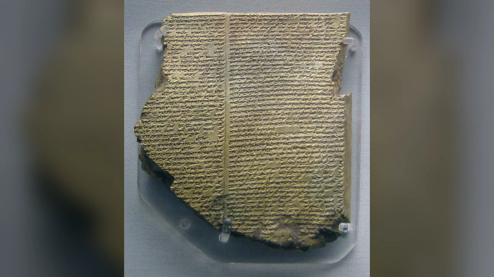
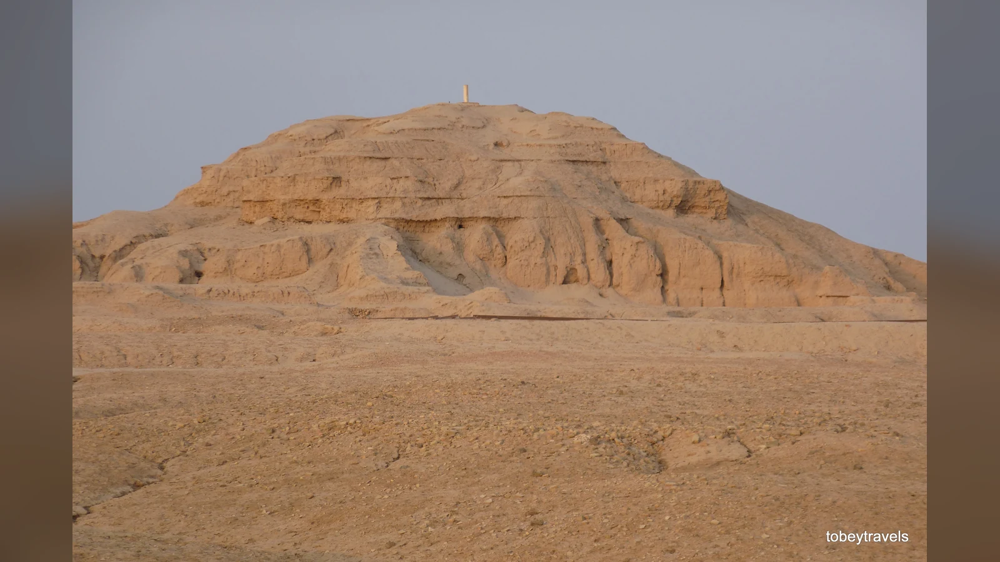
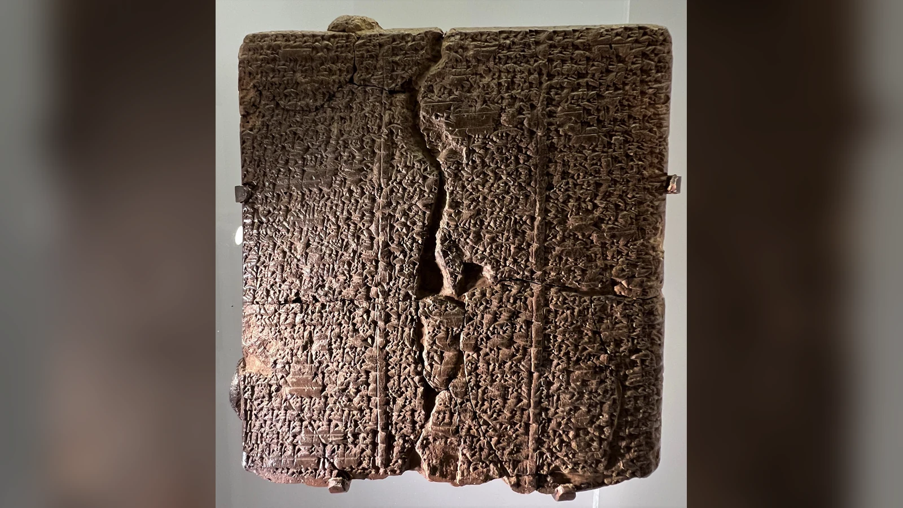
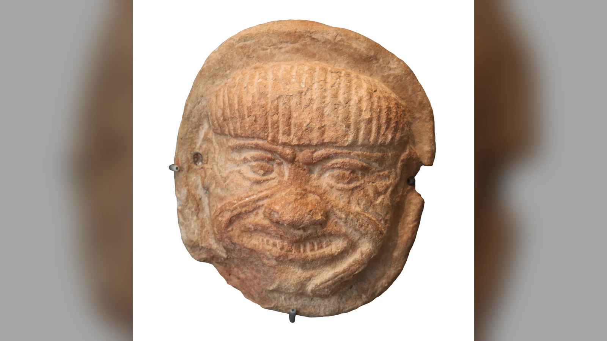
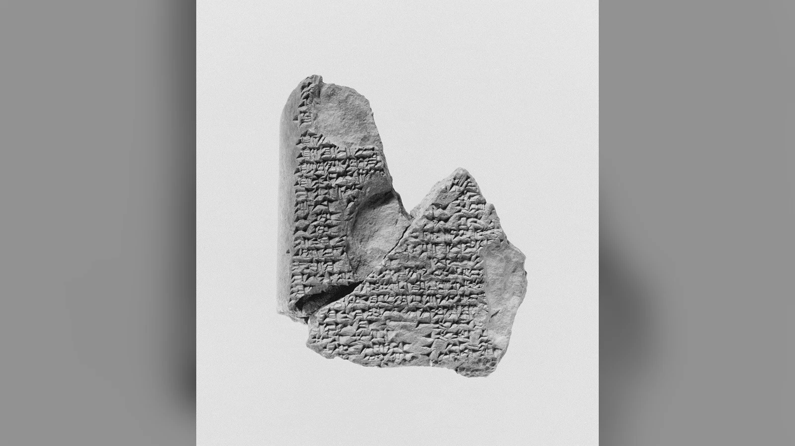
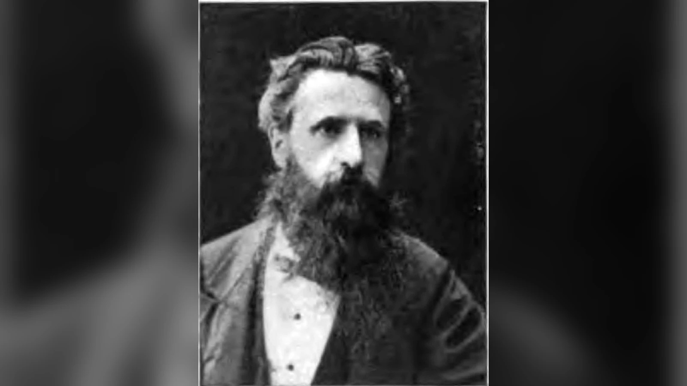

Gılgamış, dostu Enkidu’nun ölümünden sonra onun bedeninden ayrılmak istemez. Birlikte tehlikeli yolculuklara çıktığı, yanında savaştığı insan artık karşılık vermemektedir. Uruk’un güçlü kralı, Humbaba’yı yenmiş ve Gök Boğası’nı öldürmüştür; fakat bütün bu başarıları arkadaşını geri getirmeye yetmez. Enkidu’nun bedenindeki çürüme belirtileri, kaybın geri dönüşsüzlüğünü önüne koyduğunda kendi sonunu da düşünmeye başlar. O andan sonra aradığı şey yeni bir zafer değildir. Dostunun başına gelenin bir gün kendisine de gelmesini engellemek ister.
Gılgamış Destanı, bu korkunun peşinden Uruk’tan dünyanın sınırlarına uzanan bir yolculuğu anlatır. Mezopotamya edebiyatının bu büyük eserinde krallık, dostluk, ün ve ölüm aynı hikâyenin içinde birbirine bağlanır. Başlangıçta gücünü sınırsızca kullanan kral, kendisine karşı durabilen Enkidu’yla tanışır; aralarındaki mücadele dostluğa dönüşür. Enkidu’nun ölümü ise kahramanlıkların yönünü değiştirir. Gılgamış artık adını yaşatmanın değil, kendisini hayatta tutmanın yolunu aramaktadır. Yolculuğunun sonunda tanrılara özgü sonsuz yaşamı elde edemez; destanın kalıcı gücü de bu yenilgiyle ne yaptığına dayanır.
Bu hikâye günümüze tek bir yazarın elinden çıkmış eksiksiz bir kitap olarak ulaşmadı. Sümerce Bilgameş şiirleri, Eski Babil döneminin Akadca anlatıları ve daha sonraki destan düzenlemeleri, yüzyıllar boyunca yazıcıların elinde çoğaltıldı. Bugün okunan metin, farklı merkezlerde bulunan kırık tabletlerin ve nüshaların karşılaştırılmasıyla kurulmuştur. Bir sahnenin ayrıntısı başka bir dönemin kopyasında değişebilir; bazı satırlar hâlâ eksiktir. Kilin üzerinde korunmuş bu parçalar, hem Gılgamış’ın yolculuğunu hem de onu anlatan insanların değişen dünyasını taşır.
Gılgamış anlatıları günümüze ulaşan en eski kahramanlık edebiyatı geleneklerinden biridir. Bununla birlikte esere yakıştırılan “dünyanın ilk hikâyesi” veya “ilk edebî metin” ifadeleri, Mezopotamya’nın başka eski metinlerini ve destanın uzun oluşum sürecini gölgede bırakır. Onu önemli kılan tek başına eskiliği değildir. Binlerce yıl önce yazıcıların kil üzerine kaydettiği bir kralın yasını, gücünün sınırlarını ve hayatta kalma isteğini bugün hâlâ birbirine bağlı bir hikâye olarak okuyabilmemizdir.
Gılgamış Destanı Nedir ve Hangi Uygarlığa Aittir?
Destanın coğrafi merkezi Mezopotamya'dır; ancak “Mezopotamya uygarlığı” tek bir halkı, dili veya değişmeyen kültürü anlatmaz. Dicle ve Fırat çevresindeki şehirlerde farklı dönemlerde Sümerce ve Akadca konuşan topluluklar, çeşitli krallıklar ve daha sonra Babil ile Asur siyasi gelenekleri bulunuyordu. Gılgamış'ın şehri Uruk güney Mezopotamya'da, bugünkü Irak sınırları içindeydi. Uruk'un şehirleşme ve yazının gelişimindeki yeri, destanın kent yaşamına verdiği önemi tarihsel bir bağlama oturtur.
Gılgamış'ın adı Sümerce metinlerde çoğunlukla Bilgameş biçiminde karşımıza çıkar. Sümerce, Akadcadan farklı bir dildir. Akadca ise Sami dil ailesine mensuptur ve Babil ile Asur yazılı kültürlerinde farklı biçimleriyle kullanılmıştır. Çivi yazısı bu dillerden herhangi birinin adı değildir; kamış kalemle kil üzerine yapılan kama biçimli işaretlerden gelişen ve farklı dillerin kaydedilmesinde kullanılan yazı sistemidir. Bir tabletin çivi yazılı olması, onun otomatik olarak Sümerce olduğu anlamına gelmez.
Gılgamış hakkındaki ayrı Sümerce şiirler ile Akadca birleşik destan arasında hem süreklilik hem fark vardır. Sedir Ormanı, göksel boğa ve yeraltı dünyası gibi anlatı çevreleri eski Sümerce metinlerde de görülür. Fakat bu şiirlerin olay sırası, karakterlerin işlevi ve anlatı amaçları, bugün yaygın okunan Standart Babil destanının her ayrıntısıyla özdeş değildir. Akadca geleneğin başarısı, çeşitli malzemeleri Gılgamış'ın dönüşümü ve ölümle yüzleşmesi çevresinde yeni bir bütünlüğe kavuşturmasıdır.
Destanın geniş bir bölgede tanınmış olması da önemlidir. Gılgamış metinlerinin parçaları Mezopotamya dışındaki merkezlerde, Anadolu'daki Hattuşa ve Suriye'deki Emar gibi yerlerde de bulunmuştur. Bu buluntular her yerde aynı metnin aynı biçimde okunduğunu kanıtlamaz; fakat hikâyenin yazıcı okulları ve siyasi-kültürel ilişkiler aracılığıyla dolaşıma girdiğini gösterir. Bir Uruk kralının hikâyesi, yüzyıllar sonra farklı dillerin ve sarayların dünyasında yaşamayı sürdürmüştür.
Destanın hangi uygarlığa ait olduğu, bu uzun dolaşımın içinden anlaşılır. Kahramanın ve bağımsız şiirlerin kökleri Sümer geleneğine uzanır; bugün en tanınmış uzun düzenlemesi Akadca Babil edebiyatının ürünüdür. Asur yazıcıları da bu edebiyatı kopyalayarak kütüphanelerinde korumuştur. Sümer, Babil ve Asur adları burada birbirini dışlayan seçenekler değildir. Aynı kahramanın farklı dillerde ve siyasi çevrelerde yeniden anlatılması, Mezopotamya yazılı kültürünün nasıl kuşaktan kuşağa aktarıldığını gösterir.
Gılgamış Kimdir, Gerçekten Yaşamış Olabilir mi?
Destan, Gılgamış’ı Uruk’un olağanüstü güçlü kralı olarak tanıtır ve onu “üçte ikisi tanrı, üçte biri insan” diye niteler. Bu oran, mitolojik anlatının kahramana verdiği üstünlüğü dile getirir; tarihsel bir soy hesabı değildir. Gılgamış’ın sıradan insanların yapamadığı işleri başarabilmesi, tanrılarla kurduğu bağla birlikte anlatılır. Fakat bu üstünlük, ölümden korunmasını sağlamaz. Kralın ne kadar güçlü olduğunu bilmek, Enkidu’nun başında ne kadar çaresiz kaldığını anlamak için gereklidir.
Edebî kahramanın gerisinde gerçek bir Uruk kralının bulunmuş olması mümkündür. Sümer Kral Listesi’nde Gılgamış’ın adı Uruk hükümdarları arasında yer alır. Bu kayıt, Mezopotamyalıların onu geçmişteki krallık geleneğine yerleştirdiğini gösterir; destandaki maceraları doğrulamaz. Liste, hükümdar adlarıyla birlikte siyasi meşruiyet düşüncesini ve efsanevi geçmişi de taşır. Dolayısıyla kralın tarihsel varlığına ilişkin tartışmada kullanılabilir, ancak modern bir kronoloji cetveli gibi okunamaz.
Araştırmacılar tarihsel bir Gılgamış'ın MÖ üçüncü binyılın ilk yarısında yaşamış olabileceğini değerlendirir. Ancak doğrudan doğrulanmış bir biyografisi, kesin doğum ve ölüm tarihleri ya da destandaki olayları ona bağlayan çağdaş belgeler elimizde değildir. Eski Mezopotamya'da kralların adları kuşaklar boyunca anlatı kahramanına dönüşebilir; gerçek bir siyasi figür, edebî gelenekte tanrılarla konuşan ve kozmik sınırları aşmaya çalışan bir karakter hâline gelebilir. Gılgamış örneğinde tarihsel çekirdek ile destan kişiliği arasındaki mesafe bu nedenle dikkatle korunmalıdır.
Listenin Gılgamış’a verdiği 126 yıllık saltanat, bu güçlüğü somutlaştırır; çevresindeki bazı hükümdarların süreleri daha da uzundur. Krallığın şehirler arasında el değiştirmesi, metinde geçmişin meşru düzenini anlatan bir sıraya bağlanmıştır. Farklı nüshalarda adların ve sürelerin değişmesi de bu geleneğin aktarılırken yeniden düzenlendiğini gösterir. Gılgamış’ın listede bulunmasıyla kaç yıl hüküm sürdüğünü bilmek arasında bu yüzden önemli bir mesafe vardır. İlki eski bir hatırayı korur; ikincisi için daha sağlam ve çağdaş belgelere ihtiyaç duyulur.
Uruk surları bu mesafenin anlamlı bir örneğidir. Destan şehrin görkemli duvarlarını öne çıkarır; Uruk'un gerçekten büyük ve eski bir şehir olduğu arkeolojik araştırmalarla bilinir. Fakat arkeolojik olarak belirlenen her sur evresini doğrudan Gılgamış'ın kişisel inşaatı diye adlandırmak mümkün değildir. Metnin şehre atfettiği ihtişam ile arkeolojinin ortaya koyduğu kent tarihi birbirini aydınlatabilir, ancak birbirinin yerine geçmez.
Destanın Uruk’u da yalnız görkemli surlardan oluşmaz. Hikâyenin başında halk, kralın ölçüsüz davranışlarından şikâyet eder; Gılgamış’ın gücüne karşı bir denge aranır. Kahraman böylece başarıları kadar başkalarına verdiği sıkıntıyla da tanıtılır. Krallık yetkisiyle halkın yaşayışı arasındaki gerilim, Enkidu’nun ortaya çıkışını hazırlar. Kralın sonraki yolculukları bu başlangıçtan koparıldığında, hikâye birbirini izleyen canavar savaşlarına indirgenir; oysa anlatının hareketi önce Uruk’un kendi içindeki bir sorundan doğar.

Gılgamış Destanı Ne Zaman ve Nasıl Yazıldı?
Gılgamış anlatılarının yazıya geçişi tek bir tarihe sığmaz. Eldeki Sümerce Bilgameş şiirlerinin önemli nüshaları, özellikle Eski Babil döneminin yazıcı geleneğinden gelir. Anlatıların bundan önce ortaya çıkmış olması mümkündür; ancak kil tabletin üretildiği tarih, hikâyenin ilk anlatıldığı tarihi vermez. Eski yazıcı, kendisinden yüzyıllar önce gelişmiş bir şiiri de kopyalamış olabilir. Bu nedenle araştırmacılar metnin oluşumunu, korunmuş nüshaların tarihini ve daha eski bir anlatıya ilişkin varsayımları ayrı ayrı değerlendirir.
Eski Babil döneminin Akadca nüshalarında Gılgamış ile Enkidu’nun maceraları daha bütünlüklü bir anlatıya dönüşür. Yaklaşık MÖ ikinci binyılın ilk yarısına ait bu metinlerin somut örneklerinden biri, Penn Museum’da korunan CBS 7771 numaralı tablettir; müze eseri yaklaşık MÖ 1650’ye tarihler. Daha sonraki Standart Babil metniyle karşılaştırıldığında sahnelerin kuruluşunda ve ifadelerinde farklar görülür. Eski Babil nüshası, birleşik destanın geçmişini aydınlatırken kendi döneminin anlatımını da korur. Ondan alınan bir konuşma, bütün sonraki kopyalarda aynı biçimde bulunmayabilir.
Üçüncü katman, açılış sözlerinden hareketle “Derinliği Gören” adıyla da anılan Standart Babil düzenlemesidir. Bu metin daha eski malzemeleri yeniden işleyen, kendi şiirsel bütünlüğü bulunan bir kompozisyondur. Babil geleneği düzenlemeyi Sîn-lēqi-unninni adıyla ilişkilendirir; bu bilginin MÖ ikinci binyılın sonlarına doğru yaşamış olabileceği düşünülür. Ancak bu adın anılması, onun sıfırdan bütün hikâyeyi yazdığına ilişkin çağdaş bir telif kaydı değildir. Yaşadığı dönem ve düzenlemenin tam tarihi tartışmalıdır; uzmanlar onu daha eski malzemeyi standartlaştıran bir bilgin geleneği içinde değerlendirir.
Standart metnin en ünlü kopyaları MÖ yedinci yüzyılda Asur kralı Asurbanipal'in Ninova'daki kütüphane çevresinden gelir. Bu kopyaların tarihi destanın ilk yazıldığı tarih değildir. Arada yüzyıllar boyunca metinlerin yeniden çoğaltılması, kimi bölümlerin değiştirilmesi ve farklı şehirlerde saklanması vardır. Asur kütüphanesinde bulunan tabletlerin bir kısmı daha eski Babil edebiyatının Asur yazıcıları tarafından korunmuş örnekleridir. Kütüphane ortamı bir anlamda metnin uzun hayatının son derece önemli fakat geç bir durağıdır.

Kil, bu uzun aktarımın hem dayanıklı hem kırılgan malzemesidir. Nemli yüzeye bastırılan işaretler, tablet kuruyup sertleştiğinde binlerce yıl korunabilir. Buna karşılık bir kırık, birkaç satırı bütünüyle ortadan kaldırabilir; aşınan yüzeyde işaretin yalnız bir parçası kalabilir. Aynı eserin farklı kopyaları bu yüzden büyük değer taşır: Birinde kaybolan sözler başka birinde bulunabilir. Çevirilerdeki köşeli parantezler ve boşluklar, araştırmacının hangi satırı okuyabildiğini, hangisini karşılaştırmayla tamamladığını gösterir. Akıcı bir modern baskının ardında bu yavaş ve ayrıntılı çalışma vardır.
Sümerce şiirler birleşik destandan nasıl ayrılır?
“Bilgameş ve Aga” adlı Sümerce şiir, kahramanı uzak diyarlarda ölümsüzlük arayan biri olarak değil, Kiş’in hükümdarı Aga karşısında Uruk’un tutumunu belirleyen bir kral olarak gösterir. Bilgameş önce şehrin yaşlılarına, ardından savaşabilecek erkeklerine danışır; iki topluluğun verdiği cevaplar farklıdır. Şiir, şehirler arasındaki bağımlılık ve direnme gerilimini öne çıkarır. Bu sahnelerden modern anlamda bir demokrasi tarihi çıkarmak mümkün değildir; fakat kralın toplumdaki farklı gruplarla ilişkisinin edebî anlatıda yer bulduğunu gösterir. Akadca destanın ana olay örgüsünde bu siyasi çatışma aynı biçimde anlatılmaz.
“Bilgameş, Enkidu ve Ölüler Diyarı” farklı bir anlatı çevresine açılır. Enkidu’nun yeraltına gidişi ve oradaki ölülerin durumu, yaşayanlarla ölüler arasındaki ilişkiyi gündeme getirir. Bu şiirle bağlantılı malzeme, Standart Babil dizisinin on ikinci tabletine taşınmıştır. Böylece Gılgamış geleneği içinde aynı kahramanları kullanan fakat farklı sorulara yönelen metinler bir arada bulunur. Destanın geçmişi, tek bir hikâyeye sürekli yeni maceralar eklenmesinden daha karmaşıktır; bazı şiirler birleşirken bazıları bağımsız aktarılmış, bazıları da sonradan dizinin içine alınmıştır.
Destan neden on iki tablet olarak biliniyor?
Standart Babil geleneği genellikle on iki tabletlik dizi olarak anılır. Fakat ilk on bir tabletin ana olay örgüsü ile on ikinci tabletin niteliği aynı değildir. On birinci tablet, Gılgamış'ın ölümsüzlük arayışının son aşamalarını ve Uruk'a dönüşünü içerir. On ikinci tablet ise Sümerce “Bilgameş, Enkidu ve Ölüler Diyarı” anlatısıyla bağlantılı malzemenin Akadca aktarımıdır; önceki olaylarla kesintisiz kronolojik devam oluşturmaz. Örneğin Enkidu'nun anlatı içindeki konumu, ilk on bir tabletin ölüm sahnesinden sonra modern bir romandaki gibi ilerleyen bir olay dizisi sunmaz.
Bu yüzden on iki tabletlik diziyle kesintisiz bir olay örgüsü arasında tam bir örtüşme yoktur. İlk on bir tablet Gılgamış’ın kaybını, arayışını ve dönüşünü birbirine bağlar; son tablet ise eski bir anlatıyı başka bir işlevle korur. Dizinin bugünkü bilinen biçimi, baştan on iki eşit bölüm tasarlayan tek bir yazarın planını göstermeyebilir. Yazıcıların hangi metinleri birlikte aktardığı, eserin nasıl oluştuğu kadar önemlidir. Destanın eski bir koleksiyon olarak düzenlenişi, modern bir romanın bölüm sırasından farklı beklentilerle okunmalıdır.
Destanı Okurken Çeviriler Neden Birbirinden Farklı Görünebilir?
İki Gılgamış çevirisi yan yana açıldığında, aynı olayın farklı sözlerle anlatılması kadar bir sahnenin yalnız birinde bulunması da mümkündür. Çevirmenlerin dil tercihleri bu farkın bir bölümünü açıklar; dayandıkları tabletler ise daha temel bir etkendir. Bazı baskılar Standart Babil metninin korunmuş satırlarını izler. Bazıları Eski Babil geleneğinden karşılaştırmalı parçalar ekleyerek anlatının eksik yerlerini görünür kılar. Bir kitabın açıklamaları ve önsözü, hangi nüshaların kullanıldığını gösterdiğinde bu farklar anlaşılır hâle gelir. Eserin parçalı korunması, çevirinin sınırlarını da belirler.
Karakter adları da baskıdan baskıya değişebilir. Gılgamış, Gilgameş ve Gilgamesh yazılışları, farklı dillerin ve yayın geleneklerinin tercihlerini yansıtır; Sümerce metinlerde ise Bilgameş adı görülür. Utnapiştim’in adının değişik aktarımları da her zaman başka bir kahraman bulunduğu anlamına gelmez. Bununla birlikte adların birbirine karşılık gelmesi, iki metnin aynı hikâyeyi bütün ayrıntılarıyla anlattığını göstermez. Karşılaştırmada adların yanında sahnenin sırası, konuşmanın içeriği ve tabletin dönemi de önem kazanır. Aynı kahraman, farklı bir nüshada başka bir anlatım içinde karşımıza çıkabilir.
Bu değişikliklerin içinde hikâyenin yüzyıllar süren yaşamı görünür olur. Yazıcılar eski malzemeyi korurken onu kendi edebî dünyalarının içinde yeniden işlemiştir; modern çevirmenler de korunmuş parçaları okunabilir bir kitaba dönüştürür. Gılgamış’ın yolculuğu Uruk’tan uzak diyarlara giderken, destanın yolculuğu şehirler, diller ve kütüphaneler arasında sürer. Bugünkü okuma deneyimi her iki yolculuğun da sonucudur. Bir sahnenin hangi nüshadan geldiğini bilmek, onun duygusunu azaltmaz; o sahnenin ne kadar eski ve ne kadar değişken bir aktarımın içinden ulaştığını gösterir.
Gılgamış Destanı'nın Konusu: Uruk'tan Sedir Ormanı'na
Destanın başlangıcında Uruk'un güçlü kralı halkına ağır gelen davranışlarıyla tanıtılır. İnsanların şikâyeti tanrılara ulaşır ve tanrısal müdahale, Gılgamış'ı dengeleyecek bir karşı figür yaratılmasıyla sonuçlanır. Aruru'nun yarattığı Enkidu, başlangıçta bozkırda hayvanlarla yaşayan, insan toplumunun alışkanlıklarından uzak bir varlıktır. Onun doğayla ilişkisi, Gılgamış'ın şehir ve iktidar dünyasıyla belirgin karşıtlık oluşturur.
Enkidu’nun bozkırdan insan topluluğuna geçişi, bir anda gerçekleşen basit bir ilerleme olarak anlatılmaz. Beslenme, giysi, cinsellik ve başkalarıyla kurduğu bağlar ona yeni bir hayat açar; fakat eski yakınlıklarını da değiştirir. Hayvanlar artık ona önceki gibi yaklaşmaz. Gücünü korurken daha önce ait olduğu dünyadan uzaklaşır. Destan bu dönüşümde kazanımla kaybı yan yana tutar: İnsanlar arasında yaşayabilmek, yalnız yeni beceriler edinmek değil, eski yaşamın bir bölümünü geride bırakmaktır.
Enkidu’yu bu yeni hayata taşıyan kişi Şamhat’tır. Onunla kurduğu cinsel ilişkinin ardından Enkidu, insan topluluğunun alışkanlıklarını öğrenmeye başlar. Şamhat’ın toplumsal statüsünü tanımlayan eski terimlerin anlamı ise araştırmacılar arasında tartışmalıdır; sık tekrarlanan “tapınak fahişesi” karşılığı herkesçe kabul edilmiş bir tanım değildir. Anlatıdaki rolü daha belirgindir: Enkidu’yu bozkırla Uruk arasındaki eşiğe getirir, insanlarla nasıl yaşayacağını öğrenmesine yardım eder. Kralın karşısına çıkacak dost ve rakibin hayatında, dönüşümün yolu onun aracılığıyla açılır.
Çobanların yanında yeni alışkanlıklar edinmesi, Eski Babil ikinci tabletinde bir yemek sahnesiyle ayrıntılanır. Önüne ekmek konan Enkidu, başlangıçta onu nasıl yiyeceğini bilmez; biraya da alışık değildir. Şamhat’ın yönlendirmesiyle karnını doyurur, yedi kap bira içer ve neşelenir. Ardından beden bakımı, yağlanma ve giysi gelir. İşlenmiş tahılın ekmeğe ve içkiye dönüşmesi, kahramanı bozkırda bulduğu besinlerden insanların hazırladığı sofraya taşır. Yeni hayatı bedeninde, görünüşünde ve günlük alışkanlıklarında belirginleşir. Bu ayrıntıların Eski Babil nüshasında korunması, destanın farklı dönemlerde insanlaşmayı hangi küçük davranışlarla anlattığını görmemizi sağlar.
Karşılaşmadan önce görülen rüyalar, yaklaşan dostluğu haber verir. Eski Babil ikinci tabletinin başında Gılgamış, annesine gökten düşen ve kaldırmakta zorlandığı bir cismi anlatır. Annesi, bozkırda yetişmiş ve ona benzeyen güçlü birinin geleceğini söyler. İkinci rüyada halkın çevresine toplandığı bir balta vardır; Gılgamış onu severek yanına alır. Bu görüntüler, henüz tanışmadığı kişiye bağlanacağını önceden hissettirir. Anlatıdaki rüyalar bir kralın tarihsel hayatından kaydedilmiş kişisel düşler değildir; yaklaşan ilişkinin gücünü nesneler üzerinden kuran edebî sahnelerdir.
İki kahramanın Uruk'taki karşılaşması mücadeleyle başlar. Metnin farklı nüshalarında ayrıntılar değişebilse de temel ilişki, birbirine meydan okuyan iki güçlü figürün sonunda dost olmasıdır. Gılgamış ilk kez kendisine direnebilen biriyle karşılaşır; Enkidu ise toplumun merkezindeki kralın eşiti olabilecek bir bağ kurar. Dostluk, Gılgamış'ın gücünü tamamen ortadan kaldırmaz. Onu yeni hedeflere yöneltir ve destanın geri kalanındaki kararların ortaklaşa alınmasına yol açar.
Bu dostluğun ilk büyük sınavı Sedir Ormanı yolculuğudur. Gılgamış, uzak ormana gidip korkutucu bekçi Humbaba'yla karşılaşmak ve kalıcı ün kazanmak ister. Enkidu yolun tehlikelerini bilir; orman ve bekçisi hakkında uyarılarda bulunur. Buna rağmen birlikte yola çıkarlar. Şamaş'ın desteği ve tanrısal müdahaleler, kahramanlık mücadelesinin insan gücüyle sınırlı olmadığını gösterir. Destandaki tanrılar olayları yalnız dışarıdan izleyen figürler değildir; insanların kaderi üzerinde etkili, kimi zaman birbirleriyle farklı iradeler sergileyen varlıklardır.
Sedir Ormanı'nın nerede olduğu konusunda destanın coğrafyası ile modern harita arasında bire bir eşleştirme yapmak zordur. Sedir, Mezopotamya krallıklarının yapı ve temsil kültüründe değerli bir ağaçtı; uzak ormanların kaynakları siyasi güç ve ihtişamla bağlantılıydı. Gılgamış'ın ormana yönelmesi bu bakımdan sıradan bir av macerası değildir. Kahramanlar uzak ve tehlikeli bir alan üzerinde hâkimiyet kurarak adlarını duyurmak isterler. Ancak bu amaç, koruyucu figürün öldürülmesiyle ahlaki bir gerilime dönüşür.
Humbaba, tanrısal düzen içinde ormanın bekçisidir; öldürülmesi bu yüzden sıradan bir zaferin ötesinde sonuçlar taşır. Bazı sahnelerde bağışlanma ister ve Enkidu buna karşı çıkar. Kahramanların ün kazanma arzusu, karşılarındaki varlığın korunma isteğiyle karşılaşır. Ormana girmek ve bekçisini ortadan kaldırmak, güçlerini kanıtlarken sınırları da zorlamaları demektir. Buradaki gerilim kutsal alanın korunması, uzak kaynaklara ulaşma ve kahramanlıkla ilgilidir. Modern çevrecilikle bire bir özdeş değildir; yine de insanın başarısının her zaman zararsız bir sonuç üretmediğini anlatının içine taşır.
Humbaba’nın başı, antik görsel kültürde de karşımıza çıkar. Louvre’daki AO 6778 numaralı pişmiş toprak plak, müze tarafından bu figürün tasviri olarak tanımlanır ve Isin-Larsa dönemine, yaklaşık MÖ 2004–1763 arasına tarihlenir. Destanda sözlerle kurulan korkutucu bekçi, burada elle biçimlendirilmiş bir yüz kazanır. Plak, Humbaba’nın antik dünyada da görselleştirildiğini gösterir; kahramanlarla yaptığı savaşın tarihsel kanıtı değildir. Edebiyatla görsel kültür arasındaki bu bağlantı, Mezopotamyalıların aynı figürü farklı malzemeler ve anlatım biçimleri içinde nasıl yaşattığını görmemizi sağlar.

İştar, Gök Boğası ve Enkidu'nun Ölümü
Sedir Ormanı’ndan dönen Gılgamış, bu kez İştar’ın teklifini reddeder. Tanrıçanın önceki ilişkilerinde yaşanan felaketleri sıralayarak onunla birlikteliği istemediğini söyler. Bu reddediş, destanda bir aşk anlaşmazlığının sınırlarında kalmaz. Kralın sözleri, aşk ve savaşla ilişkili tanrıçanın otoritesine dokunur; İştar’ın tepkisi bütün Uruk’u tehlikeye sürükler. Kahramanın kazandığı özgüven, ilahi güçle karşılaşmasında yeni bir bedel üretmektedir. Ormanda başlayan sınır aşımı, bu kez şehrin kendi içinde büyüyen bir çatışmaya dönüşür.
İştar, Gök Boğası'nın gönderilmesini ister. Boğa Uruk için yıkıcı bir tehlike yaratır; Gılgamış ile Enkidu onu birlikte öldürür. Bu başarı iki kahramanın şöhretini artırır, ancak tanrılar açısından yeni bir sınır ihlali anlamına gelir. Enkidu'nun tanrıçaya yönelik saygısız davranışları da çatışmayı ağırlaştırır. Böylece kahramanların gücü, baştaki özgüvenlerinin aksine, kendilerini tanrısal kararlardan bağımsız kılamaz.
Enkidu’nun rüyasında tanrısal bir görüşme ve onun ölümüne ilişkin karar anlatılır. Standart Babil metninin bu bölümü hasarlı olduğu için sahnenin ayrıntıları Hititçe uyarlamayla da karşılaştırılır. Eldeki parçalar, tanrısal dünyada kahramanların eylemlerinin aynı gözle görülmediğini gösterir: Şamaş onlara yardım etmiş, başka ilahi iradeler ise yaptıklarına karşılık vermiştir. Tanrılarla kurulan ilişki, sürekli koruma sağlayan bir güvence değildir. Gılgamış ile Enkidu bir mücadelede destek bulabilirken başka bir kararın sonuçlarından kaçamaz. Kahramanlıkların bedeli, onları güçlü kılan bu karmaşık düzenin içinde belirlenir.
Enkidu hastalanır. Ölümün yaklaşması onu öfkeye, korkuya ve geçmişteki seçimlerini sorgulamaya sürükler. Şamhat'a yönelik sert sözleri ve ardından bu sözlerin değiştirilmesi, Enkidu'nun insan toplumuna girişinin bedelini yeniden gündeme getirir. Eğer hayvanların arasında kalsaydı bu dostluğu ve kahramanlıkları yaşamayacaktı; fakat şimdi ölümün ne anlama geldiğini biliyor. Destan, toplumun ona kazandırdıklarını ve kaybettirdiklerini aynı hayatın ayrılmaz parçaları olarak gösterir.
Enkidu'nun ölümü Gılgamış için anlatının en büyük kırılmasıdır. Kral daha önce başkalarının hayatı üzerinde söz sahibi olabilen, canavarlarla savaşabilen ve tanrısal varlıklara meydan okuyabilen bir figürdü. Şimdi en yakın arkadaşını geri getiremez. Yas sahneleri yalnız kaybın büyüklüğünü değil, ölümün bedensel gerçekliğini de öne çıkarır. Gılgamış arkadaşının bedenini bırakmakta zorlanır; çürümenin kaçınılmazlığını gördüğünde kendi sonunu da düşünmeye başlar.
Bu değişim, Gılgamış'ı baştan sona bambaşka ve kusursuz bir insana dönüştürmez. Yas onu yeni bir arayışa iterken hâlâ olağanüstü bir çözüm arar: Eğer tanrılara özgü ölümsüzlük bir yerde bulunabiliyorsa onu elde etmek ister. Başlangıçta kalıcı ün için Sedir Ormanı'na giden kral, artık kendi bedeninin ölümden kurtulması için dünyanın sınırlarına yönelir. Böylece destanın iki yolculuğu birbirine bağlanır: İlki adını yaşatmak, ikincisi kendisini yaşatmak içindir.
Gılgamış'ın Ölümsüzlük Arayışı Nasıl Başladı?
Enkidu'nun ölümünden sonra Gılgamış saray düzenini geride bırakıp uzak diyarlara doğru yola çıkar. Amacı, tufandan sağ kurtulan ve tanrılar tarafından ölümsüz yaşama kavuşturulan Utnapiştim'i bulmaktır. Gılgamış için Utnapiştim'in varlığı belirleyici bir istisnadır: Eğer bir insan ölümün olağan sınırını aşabildiyse, belki kendisi de aynı sonuca ulaşabilir. Fakat istisnanın hangi koşullarda ortaya çıktığını henüz bilmez.
Yolculukta karşılaştığı akrep-insanlar, karanlık geçitler ve dünyanın uç noktalarını çağrıştıran mekânlar, anlatının coğrafyasını gündelik seyahat anlatısından ayırır. Bunları bugünkü bir haritaya işaretleyip gerçek rota çıkarmaya çalışmak destanın kozmolojik niteliğini gözden kaçırır. Gılgamış, insanların bildiği şehir ve yolların ötesinde, güneşin hareketi ve ölüm sularıyla bağlantılı olağanüstü sınırlara yaklaşır. Yolculuğun zorluğu, aradığı şeyin insan dünyasına ait olmadığını gösterir.
Yol üzerindeki Siduri, Gılgamış’ın arayışına başka bir hayat ihtimaliyle karşılık verir. Kimliği ve konuşmasının ayrıntıları nüshalara göre değişir; gündelik hayatın nimetlerini kabul etmeye çağıran ünlü öğüt özellikle Eski Babil geleneğinde korunmuştur. Bu konuşmada kralın uzaklarda aradığı yaşama karşı, insanların elindeki yakın imkânlar belirir. Siduri’nin sözleri Gılgamış’ın yasını ortadan kaldırmaz. Ancak anlatıya, sonsuz ömrün peşinden gitmekle mevcut insan hayatını yaşamak arasındaki gerilimi taşır. Standart Babil kopyalarında aynı konuşmanın bütünü aynı biçimde bulunmaz.
Eski Babil öğüdünde doymak, temiz giysiler giymek, yıkanmak, eğlenmek, çocukla ve eşle yakınlık kurmak sıralanır. Bunlar, canavarlarla savaşan kralın büyük başarılarından çok farklı ölçekte deneyimlerdir. Gılgamış dünyanın uçlarında hayat ararken Siduri, hayatın gündelik ilişkilerde de bulunduğunu söyler. Öğüdün dayanağı, tanrıların kendilerine ayırdığı yaşamla insanlara düşen ölüm arasındaki ayrımdır. Bu nedenle sözleri modern bir “anı yaşa” sloganından daha geniş bir anlam taşır: İnsan için erişilebilir mutluluk, kozmik düzende kendisine verilmemiş sonsuz ömrün yerine düşünülür.
Gılgamış sonunda kayıkçı Urşanabi'nin yardımıyla ölüm sularını aşmaya çalışır. Bu yolculuğun ayrıntılarında kahramanın aceleciliği ve yıkıcı davranışları yeni güçlükler yaratır. Urşanabi'nin rehberliği, kahramanlığın her kapıyı zorla açmaya yetmediğini gösterir. Gılgamış, Humbaba'yı yenmiş ve Gök Boğası'nı öldürmüş olabilir; ancak ölümsüzlüğe giden yolda yalnız kılıç kullanarak ilerleyemez. Yol gösteren bilgiye, doğru davranışa ve başkasının deneyimine ihtiyaç duyar.
Utnapiştim'le karşılaşma, arayışın beklenen cevabını hemen vermez. Gılgamış karşısında biçim olarak kendisine benzeyen birini bulur. Ölümsüz insan, dışarıdan bakıldığında tanrısal bir canavar veya bambaşka bir tür değildir. Bu benzerlik Gılgamış'ın umudunu artırır; fakat Utnapiştim'in anlatacağı hikâye, ölümsüzlüğün olağanüstü ve tekrarlanabilir olmayan koşullarda verildiğini ortaya koyacaktır.
Gılgamış Destanı'ndaki Tufan Anlatısı Ne Söylüyor?
Standart Babil destanının on birinci tabletinde Utnapiştim, tanrıların büyük bir tufan kararı aldığı dönemi anlatır. Hikâye, Mezopotamya'nın daha geniş tufan gelenekleriyle ilişkilidir. Ea'nın uyarısı sayesinde Utnapiştim bir gemi hazırlayıp ailesini, canlıları ve gerekli varlıkları korumaya çalışır. Tufan başlar, sular dünyayı kaplar gibi tasvir edilir ve tanrıların kendi kararları karşısındaki tepkileri bile anlatıya girer. Felaket sona erdiğinde gemi karaya oturur; kuşların gönderilmesi suların çekilip çekilmediğini anlamanın yoludur.
Utnapiştim'in anlattığı olay, Gılgamış'ın kendi arayışına cevap verir. Tanrılar tufan sonrasında Utnapiştim ile eşine olağan insanların sahip olmadığı bir hayat verir. Ancak bu ödül, Utnapiştim'in Gılgamış'a öğretebileceği basit bir yöntem değildir. Tanrıların belirli bir olaydan sonra verdikleri istisnai karardır. Gılgamış'ın aynı koşulları yeniden yaratabileceği gösterilmez. Böylece destan, ölümsüz bir insanın varlığını kabul ederken kahramanın ölümsüzlüğe ulaşma beklentisini sınırlar.
Tufan hikâyesi yalnız Gılgamış Destanı'na özgü değildir. Akadca Atrahasis anlatısında tanrıların insan nüfusu ve çıkardığı gürültüyle ilgili şikâyetleri, felaketlerin gönderilmesi ve bir kişinin uyarılması gibi öğeler daha geniş bir çerçeve oluşturur. Sümerce Ziusudra geleneği de tufandan sağ kurtulan insan figürüyle ilişkilidir. Bu anlatıları tek bir metnin farklı adlarla tekrarı saymak doğru değildir. Karakter adları, tanrıların gerekçeleri, olayların vurgusu ve eldeki metinlerin durumu değişir.
Gılgamış'taki tufanla Tevrat'ın Tekvin kitabındaki Nuh anlatısı arasında dikkate değer benzerlikler vardır: İlahi kaynaklı felaket, önceden yapılan gemi, canlıların korunması, suların çekilmesini anlamak için kuş gönderilmesi ve felaket sonrası ritüel gibi unsurlar karşılaştırılır. Mezopotamya tufan anlatılarının yazılı tanıkları, eldeki kutsal kitap metinlerinin oluşumuna ilişkin yaygın tarihlendirmelerden daha eski edebî geleneklere işaret eder. Fakat eldeki en eski tablet tarihi, her motifin ilk kez ne zaman anlatıldığını otomatik olarak söylemez.
Araştırmacılar bu benzerlikleri kültürel aktarım, ortak anlatı çevreleri ve metinler arası ilişkiler üzerinden inceler. Aynı motifin farklı metinlerde bulunması önemli bir başlangıçtır; fakat aktarımın yolunu, zamanını ve biçimini tek başına açıklamaz. Sözlü anlatılar, yazılı derlemeler ve inanç gelenekleri uzun süreçlerde birbirine temas etmiştir. Bu yüzden karşılaştırma, bir anlatının bütünüyle ve doğrudan ötekinden kopyalandığı hükmünden daha ayrıntılı bir çalışma gerektirir. Gılgamış’ın tufan bölümü, bu ilişkileri araştırmak için eski bir tanıktır; bütün inançların kökenini tek başına açıklayan bir metin değildir.
Mezopotamya’nın nehirlerle çevrili yaşamında taşkınlar da gerçek bir tehlikeydi. Farklı dönemlerdeki büyük seller ve bazı yerleşimlerde bulunan sel katmanları, felaket anlatılarının maddi çevresini anlamaya yardımcı olabilir. Ancak bu yerel veya bölgesel izler, destandaki bütün ayrıntıların gerçekleştiğini ya da yeryüzünün tamamını kaplayan tek bir tufan yaşandığını göstermez. Arkeolojinin saptadığı bir sel ile metnin tanrısal kararlarla anlattığı felaket farklı türden kanıtlardır. İkisinin ilişkisi araştırılabilir; hikâyenin edebî ve dinî anlamı, bir doğa tarihi raporu gibi doğrulanmasına bağlı değildir.
Metropolitan Museum of Art’taki küçük bir Atrahasis tablet parçası, bu geleneklerin hem yakınlığını hem de farklılığını somutlaştırır. Yaklaşık MÖ 7–6. yüzyıllara tarihlenen 86.11.378a numaralı nesnenin ön yüzünde insanların gürültüsüyle ilişkili tanrısal karar, arka yüzünde anlatının sonu yer alır. Müze kaydı, bu metindeki tufandan kurtulan kişinin Utnapiştim adıyla anıldığını belirtir. Bir Atrahasis nüshasında bu adın görülmesi, isimleri birbirinden bütünüyle yalıtılmış sabit hikâyeler gibi düşünmemek gerektiğini hatırlatır. Ortak motifler dolaşıma girerken metinlerin bağlamları da değişebilmiştir.

Gılgamış Ölümsüzlüğü Buldu mu?
Utnapiştim’in yanında Gılgamış’ın karşısına bir canavar çıkmaz. Ondan uykuya direnmesi istenir ve kral bunu başaramaz. Ölümü aşmak için dünyanın sınırlarına gelen insan, bedeninin en sıradan ihtiyacına yenilir. Utnapiştim’in ayrıcalıklı ömrünü elde etme umudu bu küçük görünen sınavda sarsılır. Anlatı, kahramanın bütün gücünü bir süreliğine etkisiz bırakır: Kılıçla, ünle veya krallık yetkisiyle uykuyu uzak tutamaz. Gılgamış’ın yenilgisi bu kez dışarıdaki bir düşmandan değil, kendi bedeninin sınırından doğar.
Utnapiştim’in eşi, Gılgamış uyurken her gün bir ekmek hazırlayıp yanına bırakır. Ekmeklerin zamanla değişen durumları, aradan geçen günlerin somut işaretlerine dönüşür. Gılgamış uyandırıldığında çok kısa süre uyuduğunu sanır; önüne konan ekmekler ise kendi algısıyla geçen zaman arasındaki farkı gösterir. Bu sınav, tanrıların kararını değiştirecek bir güç gösterisi yapamayacağını ortaya koyar. Ölümün sınırını aşmaya çalışan insan, uykunun karşısında bile bütünüyle özgür değildir.
Sonra önüne başka bir umut çıkar: Derin sulardaki bir bitki, yaşlı insanın gençliğini yenileyebilir. Gılgamış onu bulur ve Uruk’a götürüp yaşlı bir insan üzerinde denemeyi düşünür. Bitkinin vaat ettiği, Utnapiştim’e verilmiş sonsuz yaşamdan farklıdır; yaşlılığı geriye çevirme imkânıdır. Kral bu kez eline geçeni hemen yalnız kendisi için kullanmayı düşünmez. Bu tercih, arayışında paylaşmaya açık bir yön bulunduğunu düşündürür, ancak onun bütünüyle değişmiş kusursuz bir hükümdara dönüştüğünü göstermeye yetmez. Henüz bitkiyi şehre ulaştırmamıştır ve dönüş yolunda yeni bir kayıp yaşayacaktır.
Gılgamış suya girdiğinde bir yılan bitkiyi alır. Ardından yılanın deri değiştirmesi, gençliğini yenileyen canlının görüntüsünü hikâyeye bağlar; bu, mitolojik anlatının kurduğu bir açıklamadır. Kralın elindeki son somut umut da böylece gider. Humbaba’yla savaşan, Gök Boğası’nı öldüren kahraman, bitkiyi kısa bir dikkatsizlik anında kaybetmiştir. Kaybın sıradanlığı sahnenin etkisini artırır: Uzun ve tehlikeli yolculukla ulaşılan şey, büyük bir mücadele yaşanmadan elden çıkar. Gılgamış sonunda şehrine ölümsüzlükle veya gençliği yenileyecek bitkiyle dönemeyecektir.
Uruk’a dönüşte anlatı yeniden şehrin surlarına yönelir. İlk bölümde kralın gücüne ve halkın şikâyetlerine sahne olan kent, yolculuğun sonunda başka bir anlam kazanır. Gılgamış’ın kişisel hayatı sona erecektir; fakat insan eliyle yapılmış surlar ondan daha uzun süre ayakta kalabilir. Başlangıçla son arasındaki bu bağlantı, bireyin ömrüyle ortak emeğin kalıcılığını yan yana düşündürür. Surların bütün destanı açıklayan tek bir simge olduğunu söylemek güçtür. Yine de anlatının son bakışını bir başka zafer yerine şehre çevirmesi, güçlü bir yorum imkânı açar.
Gılgamış’ın elinde sonsuz hayat yoktur; geride bırakabilecekleri ise kendi bedeniyle sınırlı değildir. Şehir, yapı, anlatı ve hafıza, ölümün yerini tutmaz ve Enkidu’yu geri getirmez. Buna rağmen insanın yaptıklarının yaşam süresini aşabileceği düşüncesine alan açar. Destan, kralın bütün sorularının çözüldüğünü veya kaybının bütünüyle telafi edildiğini söylemeden kapanabilir. Onun dönüşü, başarısız bir arayışın ardından aynı dünyaya başka bir gözle bakma ihtimalini taşır. Kahramanlığın anlamı da bu ihtimalle birlikte yeniden değerlendirilir.
Destandaki Tanrılar ve İnsan Hayatının Sınırları
Destanda anılan tanrılar, Mezopotamya’nın değişen dilleri ve inanç gelenekleri içinde yaşamıştır. Sümerce İnanna ile Akadca İştar arasında güçlü süreklilikler bulunur; Utu ile Şamaş, Enki ile Ea adları da farklı dil ve dönemlerde ilişkili tanrısal figürleri belirtir. Ancak adların yakınlığı, her dönemde aynı görevlerin ve aynı hikâyelerin değişmeden korunduğu anlamına gelmez. Gılgamış metnindeki tanrısal ilişkiler, bu uzun tarihin belirli bir anlatıda aldığı biçimdir. Kahramanların hangi tanrıdan yardım gördüğünü anlamak, o anlatının kendi bağlarını izlemeyi gerektirir.
Anu göksel otoriteyle, Enlil büyük tanrısal kararlarla, Ea bilgelik ve uyarıyla, Şamaş yardım ve adaletle, Aruru yaratılışla ilişkilidir. İştar’ın gücü aşk ve savaş gibi alanlara uzanır. Bu ilişkiler, değişmez bir görev dağılımından çok olay örgüsü içinde belirginleşir. Enkidu’nun yaratılması, Sedir Ormanı’ndaki yardım, Gök Boğası’nın gönderilmesi ve tufandan önce yapılan uyarı, tanrısal gücün insan hayatına farklı yönlerden dokunduğu sahnelerdir. Kralın iradesi güçlüdür; fakat yaşadığı dünyanın bütün kararlarını kendi adına veremez.
Gılgamış’ın tanrısal soyla ilişkilendirilen özellikleri, ölüm karşısında bu sınırı ortadan kaldırmaz. Anlatının temel ironisi burada yatar. Sıradan insanlardan güçlü, tanrılarla ilişkili ve büyük işlere girişebilen kral, Enkidu'nun kaderini değiştiremez. Güç ile ölüm arasındaki bu orantısızlık, destanın kahramanlık edebiyatı olarak önemini artırır. Kahraman ne kadar büyük gösterilirse ölümün herkes için geçerli sınırı o kadar görünür hâle gelir.
Gılgamış Tabletleri Nasıl Bulundu ve Okundu?
On dokuzuncu yüzyılda Mezopotamya’da yürütülen kazılar, Gılgamış’ı modern okurların dünyasına yeniden taşıdı. Ninova’daki Asurbanipal kütüphane çevresinden çıkarılan çok sayıdaki tablet ve parça bu süreçte belirleyici oldu. Ancak destan, bir gün yan yana duran on iki eksiksiz levha olarak bulunmadı. Parçaların hangi esere ait olduğunu anlamak, işaretlerini okumak ve başka nüshalarla birleştirmek gerekiyordu. Kazıyla ortaya çıkan malzemenin bir edebî metne dönüşmesi uzun sürdü; hikâyenin yeni bölümleri de bu karşılaştırmalı çalışmaların içinde tanındı.
Austen Henry Layard’ın Ninova ve çevresindeki kazıları, Asur eserlerinin Avrupa müzelerine taşındığı erken aşamalarda önemli yer tuttu. Hormuzd Rassam’ın bölgedeki kazılara katkısı da bu keşif tarihinin temel parçalarındandır. George Smith ise British Museum’da tabletler üzerinde çalışarak metinleri tanıyan, parçaları birleştiren ve tufan anlatısının okunmasıyla kamuoyunun dikkatini çeken araştırmacıydı. Bu isimlerin yaptığı işler birbirini tamamlar, fakat aynı değildir. Bir eseri topraktan çıkarmakla hangi hikâyeyi taşıdığını belirlemek arasında dil, kataloglama ve karşılaştırma çalışmaları vardır.
George Smith’in 1872’de Mezopotamya tufan anlatısını tanıtması, kil tabletleri dar bir uzman çevresinin dışına taşıdı. Kutsal kitapların tufan hikâyesiyle karşılaştırılabilecek eski bir metnin okunması büyük ilgi uyandırdı. Smith’in çalışması, çivi yazısının çözülmesinde kendisinden önceki ve çağdaşı araştırmacıların oluşturduğu birikime dayanıyordu. Onun katkısı, belirli parçaları tanımak, birleştirmek ve taşıdıkları anlatıyı açıklamaktı. Böylece bir müze koleksiyonundaki kırık tablet, edebiyat ve dinler tarihi tartışmalarının merkezindeki eserlerden biri hâline geldi.

British Museum’daki K.3375 numaralı tufan tableti, Standart Babil destanının on birinci tablet metnini taşıyan Yeni Asur dönemi kopyasıdır. Asurbanipal kütüphanesinden gelen bu eser, Gılgamış’ın yaşadığı varsayılan dönemden çok daha sonrasına aittir. Müze kayıtlarında aynı metin grubuyla ilişkili başka parçalar da bulunur. Katalog numaraları ve parçalar arasındaki bağlantılar, destanın yeniden kurulma sürecini izlemeyi sağlar. Sergilenen nesne, anlatının ilk yazıldığı özgün tablet olmaktan çok, eski edebiyatı yüzyıllar sonra koruyan bir yazıcının bıraktığı tanıktır.
Andrew R. George’un metin çalışmaları, bu parçalar arasındaki ilişkileri ayrıntılı biçimde inceler. Araştırmacı bir nüshanın okunabilir satırlarını ötekinin kırık yüzeyiyle karşılaştırır; işaretlerin farklı okunuşlarını ve anlatının tarihini değerlendirir. Çeviride birkaç kelimeyle geçen bir bölümün arkasında, ayrı koleksiyonlarda korunan parçalar bulunabilir. George’un katkısı bu nedenle yeni bir İngilizce anlatımın ötesine uzanır. Modern okurun sayfada kesintisiz gördüğü hikâye, antik yazıcıların kopyalarıyla bugünkü araştırmacının sabırlı karşılaştırmasını birlikte taşır. Metnin maddi geçmişiyle edebî okuması burada buluşur.
Smith’in duyurusuyla geniş çevrelerin dikkatini önce tufan benzerliği çekmişti. Sonraki araştırmalar destanın krallık, dostluk, yas ve ölüm çevresinde kurduğu daha geniş edebî yapıyı öne çıkardı. Gılgamış’ın başka bir metinle ilişkisi önemli bir araştırma konusu olarak kaldı; fakat eser yalnız bu ilişkiye indirgenmedi. Kendi sahneleri, dili ve anlatı düzeni de incelemenin merkezine yerleşti. Böylece eski tabletler, modern bir tartışmada kullanılacak benzerliklerin ötesinde, Mezopotamya insanının hayatı ve ölümü nasıl düşündüğünü gösteren bir edebiyat eseri olarak okunabildi.
Uruk’a Dönen Kralın Elinde Ne Kaldı?
Gılgamış, hikâyesinin başında adını yaşatacak bir zaferin peşindedir. Enkidu’nun ölümünden sonra ise ünün kendi hayatını korumaya yetmediğini görür. Böylece birbirine benzeyen iki yolculuk farklı arzularla yapılır: Sedir Ormanı’na kalıcı bir ad için, Utnapiştim’e ölümden kurtulmak için gider. Dostluk, krallık, ün ve yas bu değişimin içinde birbirine bağlanır. Destanın bugün de etkili olmasının bir nedeni, ölüm üzerine soyut öğütler sıralamak yerine kahramanın isteklerinin nasıl değiştiğini olayların içinden göstermesidir.
Bu değişimi okuyabildiğimiz metin de uzun bir hayatta kalma hikâyesi taşır. Sümer şiirlerinden Babil düzenlemelerine, Asur kütüphanelerinden modern koleksiyonlara uzanan aktarımın bazı bölümleri kırılmış, bazıları başka kopyalarda korunmuştur. Gılgamış’ın kişisel ömrü sınırlıyken onu anlatan sözler, farklı insanların emeğiyle kendi dönemini aşmıştır. Bu, destanın bilinçli olarak kurduğu bir mesaj değildir; eserin korunma tarihinin bugün açtığı bir bağlantıdır. Yazıcıların ve araştırmacıların çalışması, kralın ulaşamadığı sürekliliği hikâyesine kazandırmıştır.
Sonunda Uruk surları yeniden görünür; Enkidu geri dönmez, sonsuz yaşam bulunmaz. Buna rağmen destan yalnız bir başarısızlığın kaydı olarak kalmaz. Gücün neye yettiğini ve neye yetmediğini aynı hayat içinde gösterir. Gılgamış’ın bütün kayıplarını kabullendiği veya kusursuz bir bilgeye dönüştüğü sonucunu metne zorla yüklemek gerekmez. Şehre dönüşü, insanın ölüm karşısında yapabileceklerinin sınırlı fakat değersiz olmadığını düşündürür. Hikâyenin açık bıraktığı bu alan, bir kralın çok eski arayışını bugün de okunabilir kılar.
Sıkça Sorulan Sorular
Gılgamış Destanı nedir?
Gılgamış Destanı, Uruk kralı Gılgamış ile Enkidu'nun dostluğunu, Sedir Ormanı ve Gök Boğası maceralarını, Enkidu'nun ölümünü ve kralın ölümsüzlük arayışını anlatan Mezopotamya edebiyat eseridir. Ayrı Sümerce şiirlerle ilişkili olan anlatı, Akadca destan biçimleri kazanmış ve farklı dönemlerde çoğaltılmıştır.
Gılgamış Destanı hangi uygarlığa aittir?
Kökleri Sümer kültürüne uzanır; bugün yaygın olarak okunan birleşik destanın önemli biçimleri Akadca Babil edebiyatına aittir. Asur kütüphanelerinde de nüshaları korunmuştur. Bu nedenle onu tek bir uygarlığın tek tarihte yazdığı değişmez eser gibi sunmak doğru değildir.
Gılgamış gerçekten yaşamış mıdır?
Tarihsel bir Uruk kralından esinlenmiş olması mümkündür. Adı Sümer Kral Listesi'nde yer alır, ancak bu liste mitolojik ve siyasi unsurlar içerir. Gılgamış'ın destandaki maceralarını doğrulayan doğrudan tarihsel kanıt veya kesin biyografik tarihler yoktur.
Gılgamış Destanı'nı kim yazmıştır?
Eserin tek bir ilk yazarı bilinmiyor. Sümerce ayrı şiirlerden gelişen Akadca anlatılar yüzyıllar boyunca yeniden düzenlendi. Standart Babil biçimi gelenekte Sîn-lēqi-unninni ile ilişkilendirilir; bu atıf onun bütün hikâyeyi sıfırdan yazdığını kanıtlamaz.
Enkidu kimdir?
Enkidu, Gılgamış'ı dengelemesi için yaratılan ve başlangıçta hayvanlarla yaşayan güçlü figürdür. Şamhat'ın aracılığıyla insan toplumuna katılır, Gılgamış'la önce mücadele eder sonra dost olur. Ölümü, kralın kendi ölümlülüğüyle yüzleşmesine neden olan temel olaydır.
Gılgamış ölümsüzlüğü buldu mu?
Hayır. Utnapiştim'in tanrılar tarafından verilen ayrıcalıklı hayatına kavuşamaz. Uykuyla sınanır ve başarısız olur; daha sonra gençliği yenileme umudu taşıyan bitkiyi bulsa da bitkiyi bir yılan alır. Gılgamış sonunda Uruk'a döner.
Gılgamış Destanı kaç tablettir?
Standart Babil düzenlemesi on iki tabletlik dizi olarak bilinir. Ancak on ikinci tablet, ilk on bir tabletin olay örgüsünün kesintisiz devamı değildir; ayrı bir Sümerce ölüler diyarı anlatısıyla ilişkilidir. Ayrıca bugün bilinen metin, farklı yerlerde bulunan çok sayıda tablet ve parçanın karşılaştırılmasıyla kurulmuştur.
Gılgamış Destanı'ndaki tufan Nuh anlatısından eski midir?
Mezopotamya tufan geleneklerinin bazı yazılı tanıkları, Tekvin'in yazılı oluşumuna ilişkin yaygın bilimsel tarihlendirmelerden daha eskidir. İki anlatı arasında gemi, kuşlar ve felaket sonrası ritüel gibi benzerlikler bulunur. Bununla birlikte metinlerin oluşumu ve aktarımı karmaşıktır; benzerlikler tek başına basit bir “kopyalama” hükmü kurmaya yetmez.
Gılgamış tabletleri nerede bulundu?
Önemli nüshalar Ninova'daki Asurbanipal kütüphane çevresinde bulunmuştur. Ayrıca Mezopotamya'nın başka yerlerinde ve Anadolu ile Suriye'deki merkezlerde farklı dönemlere ait parçalar ele geçirilmiştir. Ünlü tufan tableti bugün British Museum koleksiyonundadır; Eski Babil dönemine ait önemli bir Gılgamış tableti Penn Museum'da korunur.
Gılgamış Destanı neden önemlidir?
Dostluk, krallık, ün, yas ve ölüm gibi konuları birbirine bağlayan en eski büyük kahramanlık edebiyatı geleneklerinden biridir. Ayrıca Sümer, Babil ve Asur yazılı kültürleri arasındaki süreklilik ve değişimi gösterir. Değeri, modern bir öğüt kitabı olmasında değil, eski Mezopotamya insanının dünyasını ve edebî düşüncesini tanımamızı sağlamasındadır.
Kaynakça
- George, Andrew R. The Babylonian Gilgamesh Epic: Introduction, Critical Edition and Cuneiform Texts. Oxford University Press, 2003. SOAS akademik eser kaydı.
- George, Andrew R. The Epic of Gilgamesh. Penguin Classics, 1999; gözden geçirilmiş baskılar. Eserin metin katmanları ve çeviri geleneği için.
- British Museum. K.3375: Gılgamış Destanı'nın tufan tableti; K.231: Gılgamış metni ve müze açıklaması; SM.1881: XI. tablet parçası.
- Penn Museum. CBS 7771, Eski Babil Gılgamış tableti, yaklaşık MÖ 1650.
- SOAS University of London. Standart Babil Gılgamış Destanı, XI. tablet, Nathan Wasserman okuması ve George'a dayanan çeviri.
- British Museum. Time(table) travellers: Çivi yazısının dil değil yazı sistemi olması ve George Smith'in çalışmaları.
- British Museum. Middle East Department: Ninova kazıları, Asurbanipal kütüphanesi ve George Smith.
- Dalley, Stephanie. Myths from Mesopotamia: Creation, the Flood, Gilgamesh, and Others. Oxford University Press, 1989; sonraki baskılar. Mezopotamya anlatı geleneklerinin karşılaştırılması için.
- Tigay, Jeffrey H. The Evolution of the Gilgamesh Epic. University of Pennsylvania Press, 1982. Metin geleneklerinin gelişimi için.
- Oxford Üniversitesi, Electronic Text Corpus of Sumerian Literature (ETCSL). Sümerce Bilgameş şiirleri için bilimsel metin derlemesi: https://etcsl.orinst.ox.ac.uk/.
- George, Andrew R. “The Epic of Gilgamesh.” Catherine Bates (ed.), The Cambridge Companion to the Epic, Cambridge University Press, 2010, s. 1–17. Yayıncı kaydı; yayıncı örnek bölümü.
- Oxford Üniversitesi, ETCSL. Sümer Kral Listesi; Bilgameş ve Aga; Bilgameş, Enkidu ve Ölüler Diyarı.
- SOAS, BAPLAR. Eski Babil II. tablet, satır 1–36; II. tablet, satır 85–111; VA+BM nüshası ve Siduri’nin öğüdü.
- Louvre. AO 6778, Humbaba başını tasvir eden pişmiş toprak plak.
- Metropolitan Museum of Art. 86.11.378a, Atrahasis tufan anlatısı tablet parçası.